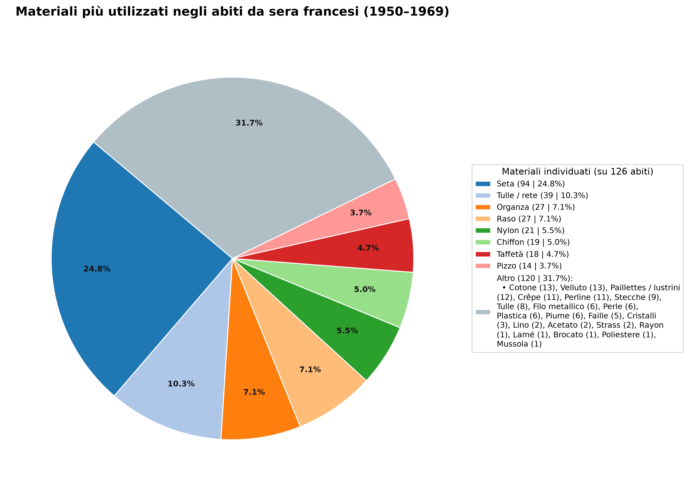
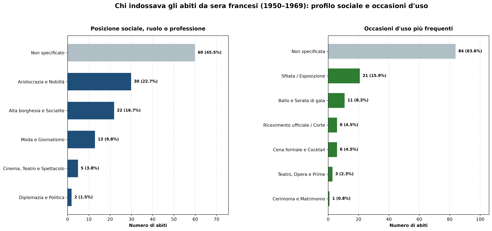
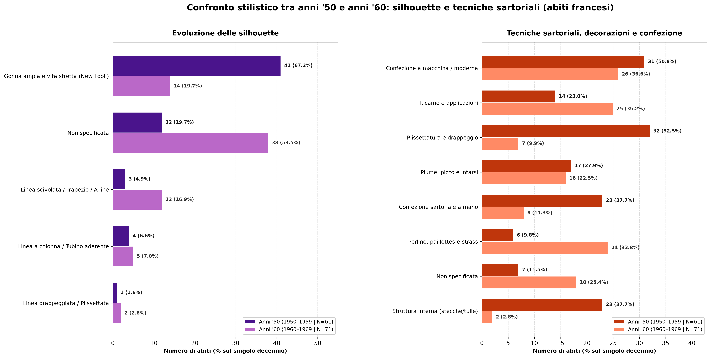

Abiti da sera al Victoria and Albert Museum: l'alta moda francese (1950–1969)
Questo report sintetizza l'analisi computazionale e storico-artistica condotta sulla collezione di abiti da sera conservati presso il Victoria and Albert Museum (V&A) di Londra. A partire dal dataset catalografico arricchito con le schede tecniche ufficiali del museo (materiali, descrizioni fisiche e storia dell'oggetto), lo studio approfondisce in particolare la produzione francese realizzata tra il 1950 e il 1969, esaminandone i principali couturier, l'impiego tessile, il profilo sociale delle committenti, le occasioni d'uso e l'evoluzione stilistica tra anni Cinquanta e anni Sessanta.
Dati
La tabella seguente raccoglie i principali indicatori quantitativi ricavati dall'incrocio tra il catalogo generale e i file strutturati dedicati al nucleo francese del ventennio 1950–1969.
| Indicatore | Valore rilevato |
|---|---|
| Numero totale di abiti da sera nel catalogo V&A | 783 abiti |
| Numero totale di abiti di produzione francese (intero archivio) | 324 abiti |
| Abiti francesi datati tra il 1950 e il 1969 | 132 abiti (16.9% del catalogo complessivo) |
| Stilista più rappresentato nell'intero catalogo | Cristóbal Balenciaga (32 abiti) |
| Stilisti più ricorrenti in Francia (1950–1969) | Cristóbal Balenciaga (25), Christian Dior (12), Hubert de Givenchy (12) |
| Materiali più utilizzati (Francia, 1950–1969) | Seta (97 abiti), Raso (30 abiti), Organza (27 abiti) |
| Categoria sociale / ruolo più frequente | Aristocrazia e Nobiltà (30 abiti) |
| Occasione d'uso più frequente | Sfilata / Esposizione (21 abiti) |
| Silhouette più ricorrente (1950–1969) | Gonna ampia e vita stretta (New Look) (55 abiti) |
| Lavorazione / tecnica più frequente (1950–1969) | Confezione a macchina / moderna (57 abiti) |
| Abiti francesi (1950–1969) esposti in galleria | 1 su 132 |
Grafici e Tabelle
Di seguito sono riportate le visualizzazioni grafiche prodotte durante l'indagine sui materiali, sulla committenza e sul confronto diacronico tra gli anni Cinquanta e gli anni Sessanta.




Approfondimento Storico-Stilistico
Committenza, profilo sociale e occasioni d'uso
Nel periodo 1950‑1969 i vestiti da sera francesi conservati al Victoria and Albert Museum riflettono una clientela prevalentemente di alto livello sociale. La maggior parte delle opere, sebbene non sempre specificata, è attribuita a membri dell’aristocrazia, nobiltà e alta borghesia, con una significativa presenza di socialite e professionisti del settore moda e giornalismo. Anche il cinema, il teatro e il mondo dello spettacolo, seppur in minor misura, hanno contribuito a diffondere questi abiti tra le élite culturali e internazionali. La clientela si estende oltre i confini francesi, con numerosi donatori e proprietari provenienti da paesi anglosassoni e del Commonwealth, evidenziando la reputazione di Paris come capitale della haute couture.
Le occasioni d’uso più frequenti sono le serate di gala, i balli e le cene formali, dove la raffinatezza del tessuto e la silhouette elegante si sposano con l’atmosfera di festa. Le sfilate e le esposizioni rappresentano un 15,9 % delle occorrenze, mentre gli eventi istituzionali – ricevimento ufficiale, corte, cerimonie di matrimonio – costituiscono una minoranza, ma testimoniano l’importanza di questi abiti nel contesto delle cerimonie pubbliche. Nonostante la ricchezza di esempi, nessuna figura individuale appare in più di tre abiti, indicando una distribuzione ampia e variegata della clientela.
Evoluzione stilistica tra anni '50 e anni '60
Il confronto tra gli abiti da sera francesi degli anni Cinquanta (61 capi) e quelli degli anni Sessanta (71 capi) evidenzia una netta trasformazione delle proporzioni. Nel primo decennio prevalgono le costruzioni scultoree derivate dal New Look, caratterizzate da corpetti sagomati e gonne ampie sostenute da strutture interne, mentre negli anni Sessanta si affermano linee più essenziali, a colonna o scivolate.
Sul piano tecnico e decorativo, l'alta sartorialità manuale, i ricami e le applicazioni luminose continuano a rappresentare un tratto distintivo della couture parigina in entrambi i decenni, ma negli anni Sessanta diminuisce il ricorso a corsetteria e sottogonne rigide a favore di soluzioni costruttive più leggere e moderne, con un impiego crescente di cuciture a macchina, chiusure lampo e fibre sintetiche o miste.